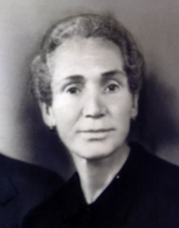

Pedro Juan Cantarero García & María de los Santos Cuenca Cailán
Pedro Juan Cantarero García & María de los Santos Cuenca Cailán  Pedro Juan Cantarero García & María de los Santos Cuenca Cailán
Pedro Juan Cantarero García & María de los Santos Cuenca Cailán  Magdalena Cantarero Cuenca
Magdalena Cantarero Cuenca
This page is within a frameset. View the entire genealogy report of family Pedro Juan Cantarero García & María de los Santos Cuenca Cailán, or surname index or report summary.
HTML generator.
© 2006 GenoPro Inc. All Rights Reserved.